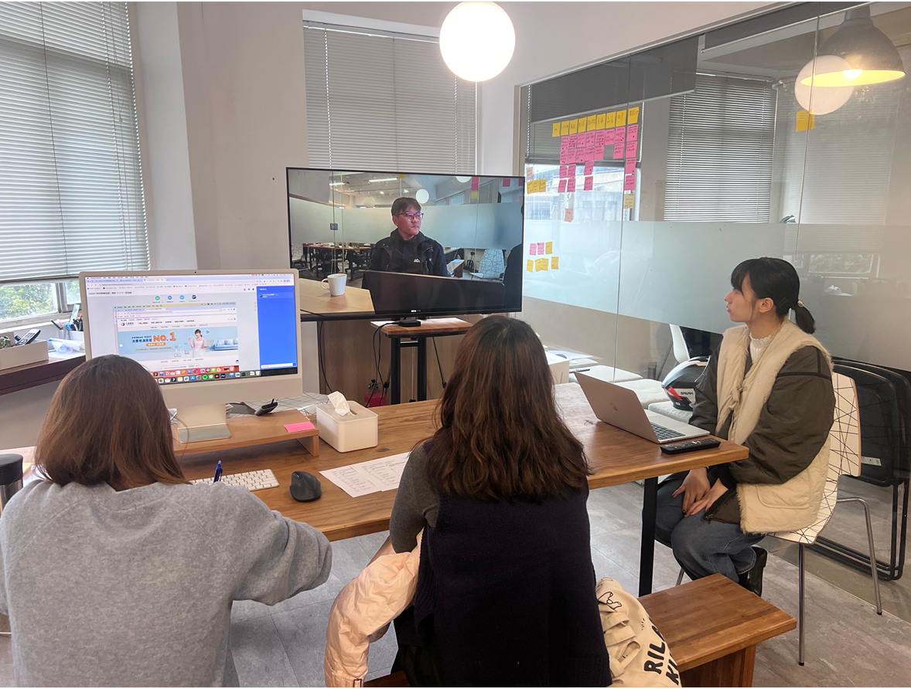
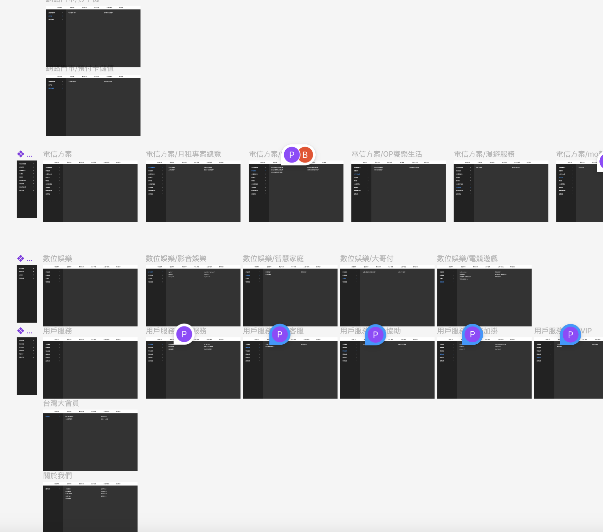
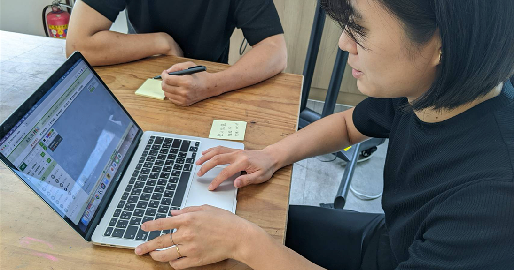
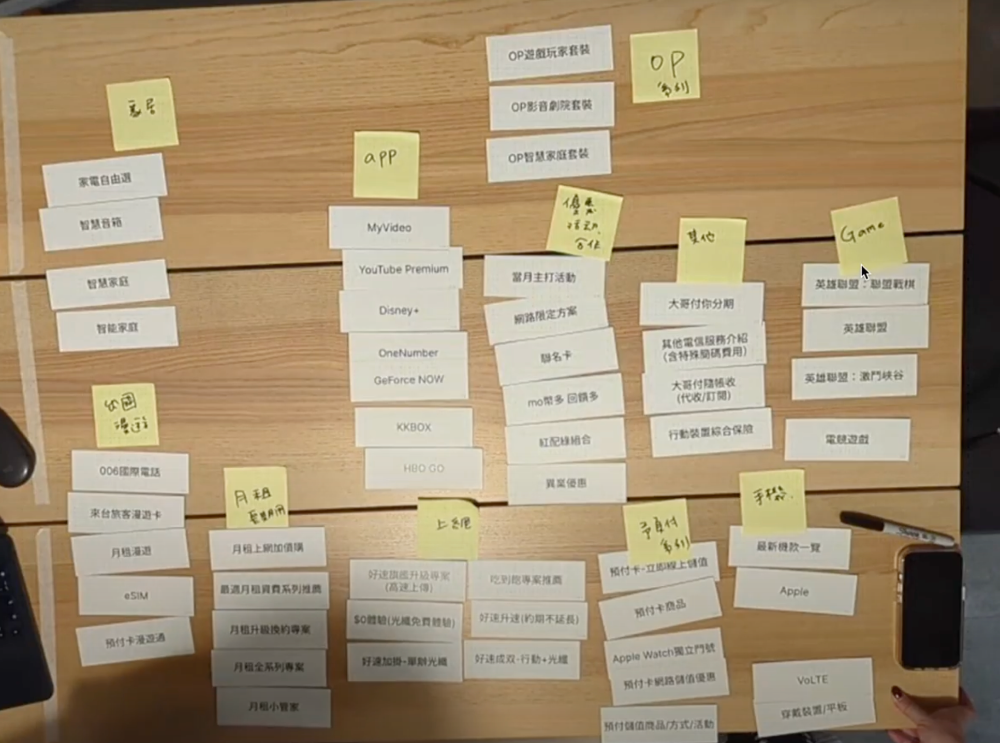
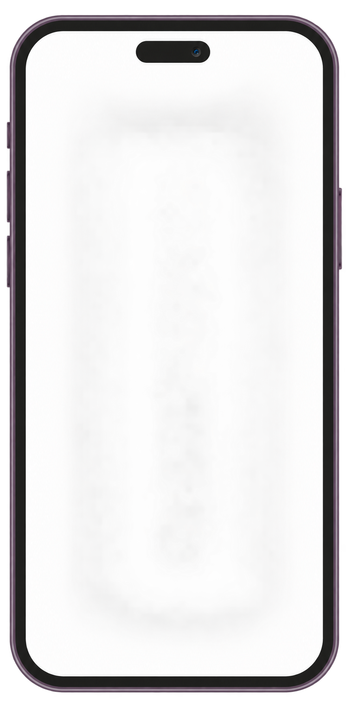

Too many choices
Services were presented simultaneously, making it difficult for customers to know where to start.
Product designer / UI & UX
Selected portfolio
Taiwan Mobile Website Redesign
Customers struggled to navigate TWM’s growing ecosystem of mobile, roaming, broadband, streaming, and smart home services. I led the redesign of the website’s information architecture with 3 designers and 2 front-end engineers, from research to launch.
The new TWM website organizes services around customer intent, helping people find relevant services in as few as two clicks while making key information easier to understand and compare.
TWM’s growing service ecosystem had become a sea of choices, making it difficult for customers to find, understand, and compare the services they needed.
I led the redesign of TWM’s information architecture around customer intent, using behavioral data to prioritize the services customers actually needed.
Reorganized TWM’s service ecosystem into a two-click customer journey, reducing its three leading website complaint categories and achieving a 78.6 CSAT three months after launch.
Customers can reach a relevant service in as few as two clicks.
CSAT score three months after the redesigned website launched.
All three leading website-related complaint categories decreased.
A growing service ecosystem, organized for the business—not the customer.
As TWM expanded beyond mobile services into roaming, home broadband, streaming, and smart home services, its website became increasingly organized around the business rather than the customer—forcing people to navigate unfamiliar categories and multiple layers to find what they needed.
Through customer interviews and usability testing, three patterns became clear:
Services were presented simultaneously, making it difficult for customers to know where to start.
Categories relied on telecommunications terminology that customers did not naturally use.
Large amounts of information made it difficult to scan, understand, and compare services.
To understand how customers actually searched for TWM’s services, we examined their behavior across real-world tasks and different IA concepts. The research revealed a clear gap between how TWM organized its services and how customers naturally thought about them.

2 novice · 2 intermediate · 2 experienced
Understanding how customers with different levels of familiarity navigate and perceive TWM’s services.

10 tasks across TWM’s services
Identifying where customers struggle when completing common tasks across the service ecosystem.

2 IA concepts explored
Exploring how different information architectures shape customers’ understanding and navigation of services.

Uncovering customers’ mental models
Discovering how customers naturally group services and identifying the language they expect to see.
Customers didn’t think in products.
They thought in situations.
Customers navigated by intent, not product categories—revealing an opportunity to restructure TWM around the situations they came to solve.
We reframed TWM’s information architecture around customer intent, transforming a product-driven structure into a simpler journey that helps customers find, understand, and compare the services relevant to their needs.

A clearer entry point organizes the service ecosystem around what people want to do.
We replaced unfamiliar telecom terminology with language customers naturally use when describing their needs, making categories easier to recognize before they know what service to look for.
Instead of treating every service as equally important, we used behavioral data to prioritize the services customers needed most, helping them reach relevant information faster.
Consistent content hierarchy helps customers understand benefits and compare the information that matters.